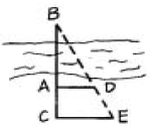
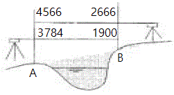

철도토목기능사 (2005-04-03 기출문제)
1과목: 철도 및 궤도일반
1. 다음 유간정리 작업 중 소정리 작업에 대한 설명으로 옳은 것은?
- 레일을 너무 이동하지 않고 유간을 균등하게 배분함을 원칙으로 한다.
- 맹유간 및 과대유간을 정리하는 정도의 경우로 수시로 시행한다.
- 유간을 근본적으로 정리하는 경우로 시행구간 전반을 표준유간으로 정리한다.
- 밀림이 있는 구간에서는 밀림의 기점쪽은 크게, 종점쪽은 작게 한다.
(정답률: 알수없음)

2. 인력에 의한 보통침목 교환 작업을 위하여 스파이크 뽑기의 작업 요령으로 옳은 것은?
- 전부 1인이 뽑는다.
- 여러명이 각자 자기 앞의 것을 동시에 뽑는다.
- 2인이 양쪽에서 교대로 뽑는다.
- 특별히 정해진 규칙이 없다.
(정답률: 알수없음)
3. 인력에 의한 줄맞춤 정정작업을 할 때 곡선의 전연장이 120m일 경우 기준말뚝의 소요 수는 몇 개인가? (단, 열차운전이 빈번한 개소는 아님.)
- 5~10
- 11~15
- 17~19
- 23~26
(정답률: 알수없음)
4. 레일유간 정리 작업중 대정리 작업시 가격법으로 시행할 경우 헌 레일을 부설레일 위로 로라에 태워 가격하는데 이때 어느 곳을 가격하는가?
- 로울러
- 받침쇠
- 유간정정기
- 레일
(정답률: 알수없음)
5. 이음매부 첫째 침목을 제1침목, 그 다음 침목을 제2침목, 그 다음을 순차적으로 제3침목이라 할 때, 끝닳음의 도상다지기에 의한 정정시 침목의 다지기 순서로 옳은 것은?
- 제3침목 - 제2침목 - 제1침목
- 제3침목 - 제1침목 - 제2침목
- 제1침목 - 제3침목 - 제2침목
- 제1침목 - 제2침목 - 제3침목
(정답률: 알수없음)
6. 장대레일을 한번에 재설정하는 길이는 몇 m 내외를 원칙으로 하는가?
- 1,000m
- 1,200m
- 1,500m
- 2,000m
(정답률: 알수없음)
7. 인력에 의한 도상 자갈치기의 오염기준으로 도상내에 토사혼입율(오염율)이 최소 몇 % 이상일 경우 자갈치기를 하여야 하는가?
- 20%
- 15%
- 25%
- 30%
(정답률: 알수없음)
8. 다음 중 침목의 분류에 속하지 않는 것은?
- 목침목
- PC침목
- 터널침목
- 교량침목
(정답률: 알수없음)
9. 레일밀림방지법으로 말뚝을 박을 때 주의하여야 할 사항으로 옳은 것은?
- 선로차단공사 절차에 따른다.
- 침목상면 보다 30cm 높게 박는다.
- 침목끝과 일치되지 않도록 한다.
- 레일앵카를 붙이기 전에 시행한다.
(정답률: 알수없음)
10. 침목교환기를 사용하여 침목교환작업을 시행할 때 일반적으로 레일 밀림이 있는 장소의 교환작업 방향으로 옳은 것은?
- 기점쪽으로 작업을 진행한다.
- 밀림이 오는 방향으로 작업을 진행한다.
- 종점쪽으로 작업을 진행한다.
- 밀림이 가는 방향으로 작업을 진행한다.
(정답률: 알수없음)
11. 1종 기계작업단의 편성장비 중 자갈정리, 자갈소운반 보충을 주요 기능으로 하는 장비는?
- 밸러스트 레귤레이터
- 멀티플 타이탬퍼
- 밸러스트 콤팩터
- 모타카
(정답률: 알수없음)
12. 정척레일을 인력에 의하여 레일을 외측에서 내측으로 넘겨 교환하는 경우의 작업에서 다음 중 가장 마지막으로 시행하는 작업은?
- 이음매판 해체 정돈
- 작업후 전반적인 궤도상태 점검
- 구레일 밀어내기
- 신레일 밀어넣기
(정답률: 알수없음)
13. 다음 중 선로 순회원이 휴대하여야 하는 기본장구가 아닌 것은?
- 수신호기(야간에는 신호등)
- 임시조치용 공기구와 재료
- 무전기
- 비타
(정답률: 알수없음)
14. 인력 도상다지기에서 궤간 내 다지기의 넓이는 레일중심에서 좌우 각 얼마로 하여야 하는가?
- 10cm∼20cm
- 20cm∼30cm
- 30cm∼40cm
- 40cm∼50cm
(정답률: 알수없음)
15. 콩자갈 채우기 작업의 기준은 자갈도상으로서 깬자갈, 친자갈, 또는 막자갈을 사용하는 선로에서 정정량이 몇 mm 이하일 때 인가?
- 10mm
- 15mm
- 20mm
- 25mm
(정답률: 알수없음)
16. 다음 중 낙석방지를 목적으로 설치하는 설비로 적당하지 않은 것은?
- 시멘트 모르타르에 의한 암석의 고정
- 낙석방지 옹벽 설치
- 낙석 덮개 설치
- 경계 설치
(정답률: 알수없음)
17. 레일 이음매 부설 방법 중 현접법(suspended joint)에 대한 설명으로 옳은 것은?
- 이음매 바로 아래에 침목을 배치하여 이음매부를 지지하는 방법
- 2개 침목 위에 이음매를 두는 것
- 침목과 침목사이에 설치한 침목 위에 이음매를 두는 것
- 이음매를 중심으로 하여 좌우로 일정한 간격을 띄어 침목을 배치하여 이음매부를 지지하는 방법
(정답률: 알수없음)
18. 반경 600m의 곡선을 열차가 110km/h로 주행할 때 소요 캔트량(mm)은 약 얼마인가? (단, 조정치 C' = 90)
- 240
- 190
- 150
- 140
(정답률: 알수없음)
19. 침목배치수가 20m에 32개이고 1개의 침목 저항력이 600kg이라면 도상횡저항력은 얼마인가?
- 400kg/m
- 480kg/m
- 640kg/m
- 1,200kg/m
(정답률: 알수없음)
20. 다음의 완화곡선의 삽입위치에 관하여 설명한 것으로 옳은 것은?
- 직선과 곡선 사이에 삽입한다.
- 직선과 직선 사이에 삽입한다.
- 종곡선과 곡선 사이에 삽입한다.
- 복심 곡선에 삽입한다.
(정답률: 알수없음)
2과목: 측량학
21. 건널목 경보기와 건널목 교통안전표지만 설치한 건널목은 몇 종 건널목인가?
- 1종
- 2종
- 3종
- 4종
(정답률: 알수없음)
22. 우리나라에서 사용하고 있는 50kgN, 60kg 레일은 다음 중 어느 종류의 레일에 해당 되는가?
- 쌍두레일
- 우두레일
- 어복레일
- 평저레일
(정답률: 알수없음)
23. 목침목과 비교할 때 콘크리트 침목의 장점으로 옳은 것은?
- 레일의 제결(縡結)이 용이하다.
- 하중에 의한 기계적 훼손을 받기 쉽다.
- 보수와 갱환 작업이 쉽다.
- 자중이 커서 안정이 좋기 때문에 궤도 틀림이 적다.
(정답률: 알수없음)
24. 본선과 측선으로 구분할 때 본선으로 구분되는 선로는?
- 대피선
- 유치선
- 인상선
- 입환선
(정답률: 알수없음)
25. 멀티플 타이탬퍼(multiple tie tamper)가 하는 궤도보수의 주 작업은?
- 자갈치기
- 자갈고르기
- 도상다지기
- 침목갱환
(정답률: 알수없음)
26. 다음 중 열차의 교행 또는 대피를 위한 장소를 무엇이라 하는가?
- 신호소
- 신호장
- 역
- 조차장
(정답률: 알수없음)
27. 다음의 용접 방법 중 전기 저항을 이용하여 용접부에 고열을 발생시켜 고압으로 레일을 압착시키는 방법은?
- 가스 압접법
- 테르밋트 용접법
- 플래시버트 용접법
- 엔크로즈드 아크 용접법
(정답률: 알수없음)
28. 분기기의 크로싱부에서 궤간의 축소를 방지하기 위하여 사용되는 것은?
- 게이지 타이
- 게이지 스트러트
- 레일 버팀쇠
- 레일 앵커
(정답률: 알수없음)
29. 장대레일의 보수작업시 유의하여야 할 사항으로 가장 거리가 먼 것은?
- 좌굴방지
- 과대신축 및 복진방지
- 재료의 부분적 마모 및 손상방지
- 장대레일의 용접방법
(정답률: 알수없음)
30. 포인트가 상시 개통 되어 있는 방향을 정위(定位)라 하고 반대로 개통되어 있는 것을 반위(反位)라 할 때 정위의 기준에서 옳지 않은 것은?
- 탈선포인트가 있는 선은 차륜탈선이 안되는 방향
- 측선 상호간에서는 중요한 방향
- 본선, 측선, 안전측선 등의 상호간에서는 안전측선의 방향
- 본선과 측선에서는 본선의 방향
(정답률: 알수없음)
31. 다음 중 삼각측량에서 하천조사를 위한 골조측량에 가장 적합한 삼각망은?
- 유심 삼각망
- 사변형 삼각망
- 단열 삼각망
- 단삼각망
(정답률: 알수없음)
32. 도상에서 제도의 오차를 0.2mm까지 허용할 때 축척 1:500로 평판측량을 할 때 중심맞추기 오차(편심 거리)는 몇 cm까지 허용할 수 있는가?
- 2㎝
- 5㎝
- 7㎝
- 10㎝
(정답률: 알수없음)
33. 삼각망의 배열중 가장 정밀도가 높은것은?
- 단삼각망
- 단열 삼각망
- 사변형 삼각망
- 유심 삼각망
(정답률: 알수없음)
34. 그림에서 AC, AD, CE의 길이를 측정하여 다음의 결과를 얻었다. AB의 거리는? (단, AC=30m, AD=40m, CE=62.5m, AD와 CE는 평행하다.)

- 57.7m
- 55.3m
- 56.6m
- 53.3m
(정답률: 알수없음)
35. 트랜싯으로 수평각을 측정할 때 시준축 오차를 제거하는 방법으로 옳은 것은?
- 배각법으로 측정하여 평균을 취한다.
- 시계와 반시계방향으로 측정하여 평균을 취한다.
- 양쪽 버어니어에서 읽은 값의 평균을 취한다.
- 망원경의 정.반위 위치에서 측정하여 평균을 취한다.
(정답률: 알수없음)
36. 고저차를 구할 때 전후 측량을 연결하기 위하여 전시와 후시가 모두 취해지는 점을 뜻하는 용어는?
- 지반점
- 기계점
- 중간점
- 이기점
(정답률: 알수없음)
37. 삼각 측량의 작업 순서로 옳은 것은?
- 답사 및 선점 - 조표 - 관측 - 계산 - 성과표 작성
- 성과표 작성 - 답사 및 선점 - 관측 - 계산 - 전개
- 성과표 작성 - 관측 - 조표 - 답사 및 선점 - 계산
- 답사 및 선점 - 관측 - 조표 - 계산 - 성과표 작성
(정답률: 알수없음)
38. 폐합트래버스를 측량하여 폐합오차가 36cm 생겼다. 트래버스 전체의 길이가 720m일 때 폐합비는?
- 1/1000
- 1/1500
- 1/2000
- 1/2500
(정답률: 알수없음)
39. 그림과 같이 교호수준측량을 한 결과, B점의 지반고는? (단, A점의 지반고는 100.000m임.)

- 101.892m
- 102.892m
- 101.982m
- 102.982m
(정답률: 알수없음)
40. 트래버스 측량에서 각 오차가 허용범위 내에 생겼을 경우에는 어떻게 처리해야 하는가?
- 재측한다.
- 각의 크기에 비례해서 배분한다.
- 각의 크기에 관계없이 각의 수(數)대로 나누어 배분한다.
- 허용범위 내이므로 그냥 둔다.
(정답률: 알수없음)
3과목: 선로보수
41. 본선에 있는 완화곡선의 길이는 3급선에서 캔트의 최소 몇 배로 하여야 하는가?
- 600배
- 700배
- 1,000배
- 1,300배
(정답률: 알수없음)
42. 장대레일을 재설정시 체결구를 체결하기 시작할 때부터 완료할 때까지의 장대레일 전체에 대한 평균온도를 의미하는 것은?
- 중위온도
- 설정온도
- 레일온도
- 대기온도
(정답률: 알수없음)
43. 탈선방지 가드레일의 설치방법으로 틀린 것은?
- 후렌지 웨이의 폭은 80‾00mm로 부설한다.
- 가드레일은 특수한 경우를 제외하고는 본선레일과 같은 종류의 것을 부설한다.
- 가드레일 양단은 깔대기형으로 구부려서 부설한다.
- 위험이 큰 쪽의 레일에 부설한다.
(정답률: 알수없음)
44. 곡선구간에 슬랙을 구하는 계산식으로 옳은 것은? (단, S:슬랙[mm], R:곡선반경[m], S':조정치[mm])
- S= 2400/R - S'
- S= 2400/S' - R
- S= 360/R - S'
- S= 360/S' - R
(정답률: 알수없음)
45. 장대레일 부설을 위한 선로조건 중 구배변환점에는 어느 것이나 반경 몇 m 이상의 종곡선을 삽입하여야 하는가?
- 500m
- 1,000m
- 2,000m
- 3,000m
(정답률: 알수없음)
46. 패킹 삽입 작업 설명중 맞지 않은 것은?
- 패킹 삽입은 원칙적으로 가로팩킹 횡삽법에 의한다.
- 패킹의 두께가 25mm미만일 때는 세로 팩킹 종삽법에 의할 수 있다.
- 패킹은 되도록 견질 강인한 목재를 사용한다.
- 패킹은 겹쳐서 사용하지 않는 것을 원칙으로 한다.
(정답률: 알수없음)
47. 본선의 등급과 곡선반경의 크기의 연결이 틀린 것은?
- 1급선 - 2,000m 이상
- 2급선 - 1,200m 이상
- 3급선 - 800m 이상
- 4급선 - 300m 이상
(정답률: 알수없음)
48. 일반적인 레일의 절단 방법으로 옳은 것은?
- 레일절단기로 직각되게 수직으로 절단한다.
- 산소절단기로 절단한다.
- 레일절단은 달구어 절단한다.
- 레일절단은 마모진행 방향으로 절단한다.
(정답률: 알수없음)
49. 본선 중 레일앵카를 원칙상 설치하지 않아도 되는 곳은?
- 복선구간
- 단선의 연간 밀림량 25mm 이상 되는 구간
- 목침목 체결구간
- 밀림이 심한 구간
(정답률: 알수없음)
50. PC 침목을 쌓아 놓을 때에는 지반침하가 없는 장소를 선택하여 몇 단 이상 쌓아서는 안되는가?
- 5단
- 7단
- 10단
- 15단
(정답률: 알수없음)
51. 크로싱의 노스레일과 가드레일간의 간격을 말하며 차륜내면간 거리와 가장 밀접한 관계가 있는 궤도의 치수는?
- 슬랙
- 캔트
- 백게이지
- 구배
(정답률: 알수없음)
52. 선로구조물의 정기점검은 년간 몇 회이상 실시하여야 하는가?
- 1회
- 2회
- 4회
- 12회
(정답률: 알수없음)
53. 레일이음매를 상호식으로 부설할 경우 이음매 위치로 가장 정확한 것은?
- 상대측 레일의 중앙으로부터 레일 길이의 1/4 이내 있도록 부설한다.
- 상대측 레일의 중앙으로부터 레일 길이의 1/2 이내 있도록 부설한다.
- 상대측 레일의 중앙으로부터 레일 길이의 3/4 이내 있도록 부설한다.
- 상대측 레일과 같게 부설한다.
(정답률: 알수없음)
54. 장척레일 부설구간의 도상저항력에 대한 기준은 몇 kgf/m이상 되어야 하는가?
- 300kgf/m
- 400kgf/m
- 500kgf/m
- 600kgf/m
(정답률: 알수없음)
55. 궤간 및 슬랙에 대한 설명 중 틀린 것은?
- 표준궤간은 1,435mm이다.
- 곡선반경 600m이하의 곡선에는 슬랙을 붙여야 한다.
- 완화곡선이 없을 경우에 슬랙의 체감길이는 캔트의 체감길이와 같게 한다.
- 슬랙은 35mm를 초과할 수 없다.
(정답률: 알수없음)
56. 모터카 추진 운전의 경우 최고 속도는 몇 km/h 이하인가?
- 15km/h
- 25km/h
- 35km/h
- 60km/h
(정답률: 알수없음)
57. PC침목 부설에 대한 설명으로 옳은 것은?
- PC침목을 운송할 때에는 철재받침을 사용 손상이 없도록 한다.
- 반드시 T볼트를 사용하여 침목을 거더에 견고하게 고정하여야 한다.
- PC침목을 운송, 취급할 때는 파손 및 응력이완에 주의하여야 한다.
- PC침목은 반경 1,000m 미만의 곡선에는 부설하지 않은 것을 원칙으로 한다.
(정답률: 알수없음)
58. 궤도검측차 점검의 본 점검 주기는 일반적으로 전 본선을 1년에 몇 회 시행하는가?
- 1회
- 2회
- 3회
- 4회
(정답률: 알수없음)
59. 장대레일의 궤도 구조로 틀린 것은?
- 곡선상에 부설할 때에는 양쪽 신축이음매의 위치는 가능한 곡선 시종점부근의 직선상에 둔다.
- 침목의 도상종저항력은 500kgf/m이상 되도록 배치하여야 한다.
- 레일은 35kg 또는 45kg의 신품을 사용한다.
- 도상은 깬자갈로 하고 적정한 도상저항력이 되도록 도상폭 및 두께를 확보하여야 한다.
(정답률: 알수없음)
60. 2종 기계 보선 작업시 이동중 장비간의 거리는 얼마 이상 유지 하여야 하는가?
- 10m
- 25m
- 50m
- 200m
(정답률: 알수없음)